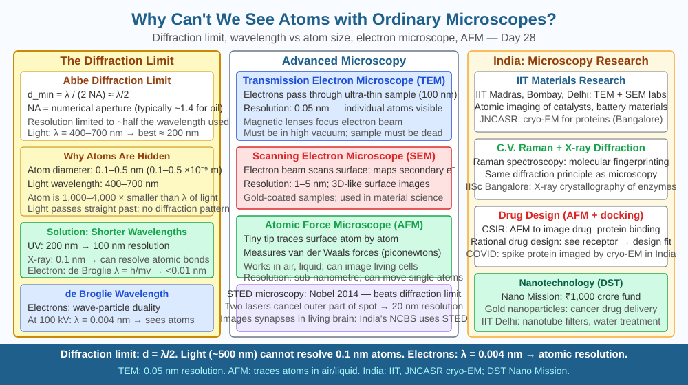

By the end of this lesson, you should be able to explain the diffraction limit of resolution, state why visible light cannot image atoms, describe how electron microscopes exploit de Broglie's wave-nature of electrons, and predict whether ultraviolet light would improve resolution compared to visible light.
The best optical microscope in the world — regardless of how many lenses it uses or how powerful its objective — cannot show you a single atom. You can see bacteria, you can see viruses with difficulty, but an atom is simply invisible to light. Meanwhile, scientists can now photograph individual atoms routinely. They use instruments that have nothing to do with light. Why is there a hard wall on what light can show us — and how did physicists break through it?
The answer comes from a fundamental property of waves: diffraction.
The diffraction limit of resolution
When light passes through a small opening or around an obstacle, it bends and spreads — this is diffraction. If two object points are very close together, the diffracted light from each point overlaps and the two points cannot be distinguished as separate. The minimum separation that a microscope can resolve is set by the Abbe diffraction limit:
Resolution ≈ 0.5λ / NA
where λ is the wavelength of light used and NA is the numerical aperture of the objective lens (a measure of the lens's ability to gather light). For the best oil-immersion objectives, NA ≈ 1.4. Visible light has wavelengths ranging from about 400 nm (violet) to 700 nm (red). Plugging in:
Resolution ≈ 0.5 × 400 nm / 1.4 ≈ ~140 nm at best.
This means the finest detail a light microscope can ever resolve is about 140–200 nm, even in principle. You cannot improve it by adding more lenses or higher magnification — magnifying beyond this limit just gives a bigger blur, not more detail. This is called empty magnification.
How big is an atom? A hydrogen atom has a diameter of about 0.1 nm (= 1 Angstrom = 10⁻¹⁰ m). A typical atom is 0.1–0.5 nm in diameter. Compare: the wavelength of visible light (400–700 nm) is 4000 to 7000 times larger than an atom. Light simply cannot "see" anything smaller than roughly half its own wavelength — diffraction spreads the image before it can form. Atoms are smaller than the diffraction limit by a factor of over 1000.
Ultraviolet microscopy — better, but not enough: Ultraviolet (UV) light has wavelengths from about 10 to 400 nm, shorter than visible light. A UV microscope using 200 nm light achieves a resolution of roughly 0.5 × 200 / 1.4 ≈ 70 nm — better than visible light, but still 700 times larger than an atom. UV microscopy is used to image viruses (50–300 nm) and chromosome structure, but cannot reach atomic scale.
Electron microscopes — breaking the light barrier
In 1924, Louis de Broglie proposed that particles with momentum also behave as waves, with a de Broglie wavelength: λ = h/p, where h is Planck's constant (6.626 × 10⁻³⁴ J·s) and p = mv is the momentum. An electron accelerated through 100,000 volts acquires enough kinetic energy to give it a de Broglie wavelength of about 0.004 nm — 100,000 times shorter than visible light. The theoretical resolution limit for such electrons is well below 0.1 nm, i.e., sub-atomic.
The Transmission Electron Microscope (TEM) fires a beam of electrons through a very thin specimen. Electrons are scattered differently by different atoms. Magnetic coils act as lenses (since electrons are charged particles deflected by magnetic fields). The electron pattern is recorded on a fluorescent screen or digital detector. Modern TEMs achieve resolution of 0.05 nm, well below atomic diameters. Researchers now routinely image individual atoms in crystal lattices using TEM.
The Scanning Electron Microscope (SEM) scans a focused electron beam across the specimen surface and detects secondary electrons emitted from the surface. It produces detailed 3D-like surface images (resolution ~1–20 nm) — perfect for imaging bacteria, blood cells, and integrated circuit surfaces.
Scanning Tunnelling Microscope (STM) — feeling atoms one by one
Invented in 1981 by Binnig and Rohrer (Nobel Prize 1986), the STM uses no lenses at all. A sharp metal tip is brought so close to a conducting surface (within ~1 nm) that electrons tunnel quantum-mechanically across the gap. This tunnelling current is extremely sensitive to distance — a change of just 0.01 nm changes the current by a factor of ~10. By scanning the tip across the surface and keeping the tunnelling current constant (via piezoelectric feedback), the tip traces the exact shape of the surface, atom by atom. STM images have resolution below 0.01 nm — imaging not just atoms but the electron clouds around them.
In 1989, IBM scientists used an STM to spell "IBM" by individually repositioning 35 xenon atoms on a nickel surface — the first time human beings had deliberately moved individual atoms.
Resolution is wavelength-limited:
| Tool | Probe wavelength | Best resolution | What you can image |
|---|---|---|---|
| Optical microscope (visible) | 400–700 nm | ~200 nm | Cells, large bacteria |
| UV microscope | 200–400 nm | ~70 nm | Viruses, chromosomes |
| Electron microscope | 0.004–0.01 nm | 0.05–0.1 nm | Individual atoms |
| STM | No wave used (tunnelling) | < 0.01 nm | Electron clouds around atoms |
The rule: to image something, your probe must have a wavelength shorter than (or comparable to) the object's size.
The included SVG shows a scale bar from 0.1 nm to 1000 nm with labelled objects: hydrogen atom (0.1 nm), DNA double helix width (2 nm), ribosome (25 nm), small virus (50 nm), large bacterium (1000 nm). Above the scale, colour bands show the resolution limit of each microscope type: visible light (resolves ≥ 200 nm), UV (resolves ≥ 70 nm), electron microscope (resolves ≥ 0.05 nm). An arrow labels atoms as below visible light's reach.

The de Broglie wavelength of a particle is λ = h/mv, where h = 6.626 × 10⁻³⁴ J·s.
A cricket ball has mass 0.156 kg and travels at 40 m/s. Calculate its de Broglie wavelength. Compare this to the diameter of an atom (~10⁻¹⁰ m). Why don't we observe wave behaviour (diffraction, interference) for a cricket ball?
Now calculate the de Broglie wavelength of an electron (mass 9.11 × 10⁻³¹ kg) moving at 10% of the speed of light (3 × 10⁷ m/s). How does this compare to the size of an atom? This number shows exactly why electrons can resolve atoms.
Why do ordinary light microscopes fail to image individual atoms?
Correct answer: a
Why is understanding the resolution limit of light microscopes more useful than just knowing they exist?
Correct answer: b
What would happen to microscope resolution if you used ultraviolet light instead of visible light?
Correct answer: b
Explain today's concept to a younger student in 60 seconds without technical jargon. Then explain it again using the correct scientific vocabulary.
If both explanations describe the same mechanism, you have understood the concept rather than memorised it.
In 2013, IBM researchers published a photograph of a single pentacene molecule showing its internal bond structure — individual carbon-carbon bonds visible as bright lines connecting atoms. This was achieved using an atomic force microscope with a CO molecule on the tip, which senses forces at sub-angstrom distances. The image looks strikingly like the textbook structural formula you draw in chemistry — straight lines between atoms. Scientists had been drawing chemical bond diagrams for 150 years before they could finally photograph one.
Ordinary light microscopes cannot image atoms because a hydrogen atom (diameter ~0.1 nm) is over 1000 times smaller than the wavelength of visible light (~400–700 nm), and diffraction prevents resolving anything smaller than roughly half the probe wavelength; electron microscopes exploit the de Broglie wave nature of electrons (λ ~0.004 nm) to achieve atomic resolution, and STMs resolve individual atoms by measuring quantum tunnelling currents.